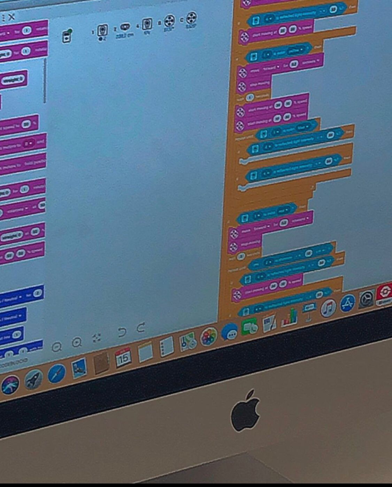

Teaching Adventures at Rabat American School

In her role as a Teacher Assistant in Coding and Robotics at Rabat American School, Aya made a significant impact by inspiring young minds to explore the realms of technology. She, with her adept guidance, introduced students to the world of programming, employing a kid-friendly pseudo-code derived from Python. Her approach not only facilitated the learning process but also ignited a passion for technology, as evidenced by the animated robots that came to life under her mentorship.
Navigating the Artisanal Marketplace at Lunja
Aya ventured into the dynamic world of e-commerce as the Sales Websites Manager at Lunja and Artisanal Morocco. Tasked with maintaining an online space dedicated to showcasing Moroccan artisanal treasures, she skillfully managed a diverse range of products, from exquisite cosmetic items to intricately woven carpets. Despite the eventual discontinuation of the project, Aya's journey was a rich tapestry of challenges and triumphs, providing invaluable insights into the world of online retail and the timeless allure of artisanal craftsmanship.